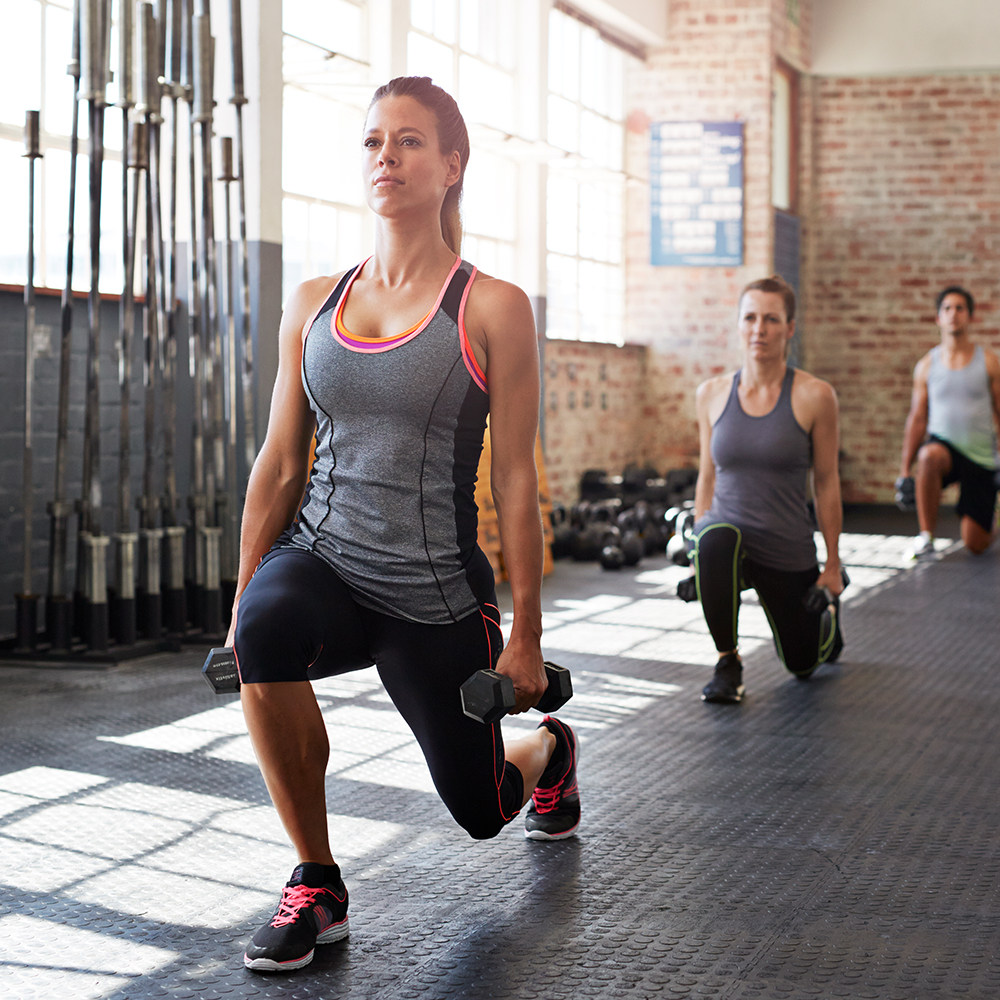

|
Endurance activities, often referred to as aerobic, increase your breathing and heart rates. These activities help keep you healthy, improve your fitness, and help you perform the tasks you need to do every day. Endurance exercises improve the health of your heart, lungs, and circulatory system.These include:
|
|  |
Strength Exercises: Your muscular strength can make a big difference.Strong muscles help you stay independent and make everyday activities feel easier, like
|